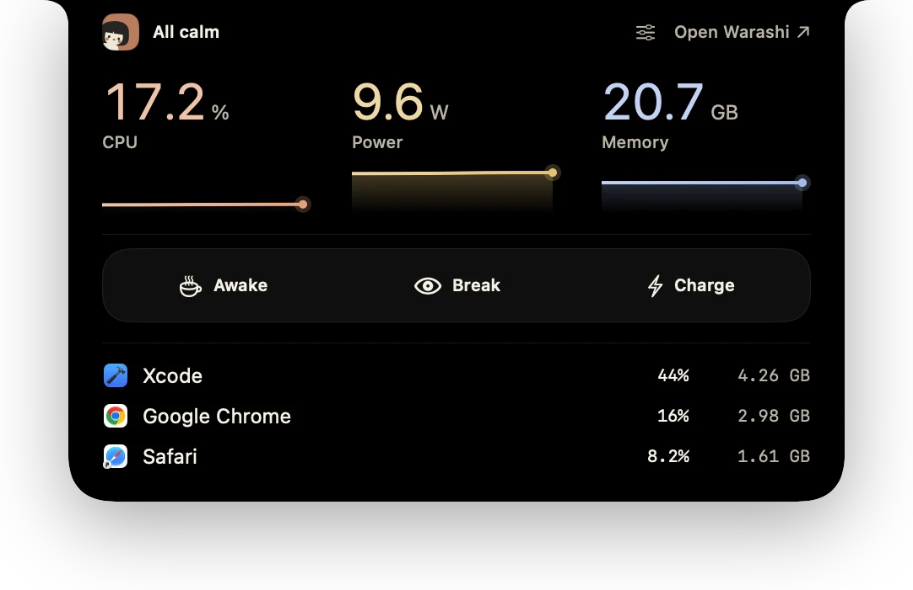
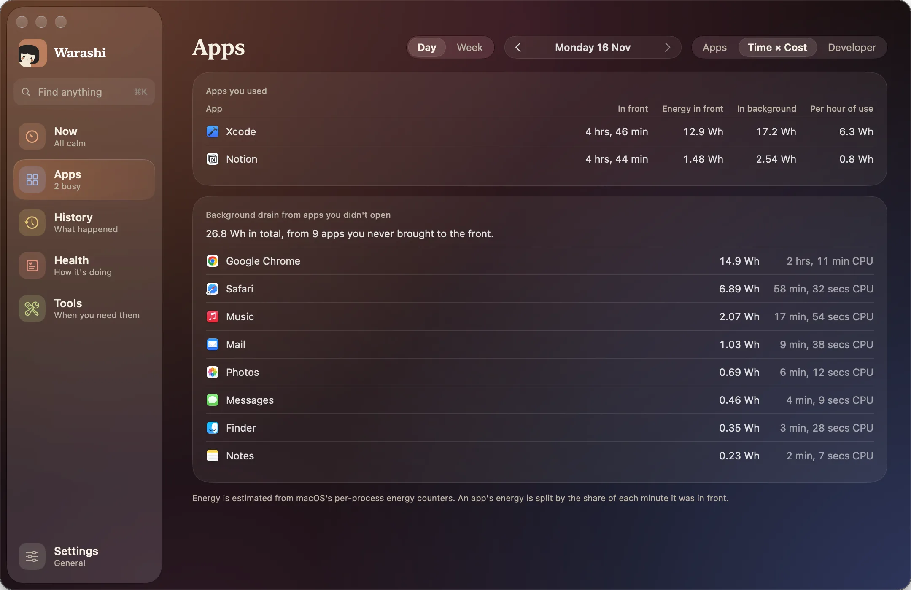
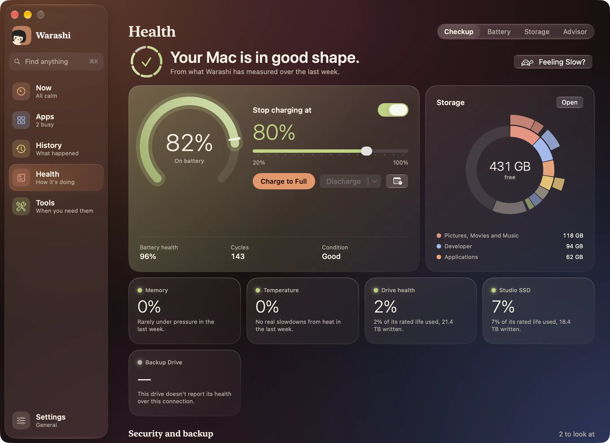

Het geestje dat voor je Mac zorgt.
Warashi houdt je Mac in de gaten, houdt de batterij jong en de schijf leeg, zegt het meteen als er iets mis is en herinnert je eraan te rusten. Eén rustige menubalk-app in plaats van elf.
Apple silicon · macOS 26 of nieuwer · Gratis bèta · Geen account


Zorg · Batterij
Vastgehouden op 80%.
Veroudert jaren langzamer dan een batterij die op 100% blijft.
Schoon · Opruimen
7,2 GB veilig op te ruimen
App-cachesBrowsersLogsOntwikkelaar
Rust · Pauzes
0:15
Kijk weg van het scherm.
Controle
Alles in orde.
Weten · Waarschuwingen
 Google Chrome9,8 GB
Google Chrome9,8 GB
Het geheugen raakt op. Stop hem, of laat het maar.
Weten · Geschiedenis
Waarom was het traag om 14:02?
Xcode gebruikte het grootste deel van de processor.
Voor ontwikkelaars
$ warashi agents Claude Code working · 62% left Codex done · my-app
Weten
Hij kent je Mac van binnen en van buiten.
Eén geestje en één getal in de menubalk, twee naast de inkeping, en elke vijf seconden een meting, een jaar bewaard. Als er iets gebeurt, weet Warashi al waarom.



Eén keer gemeld
Een op hol geslagen app, krap geheugen, hitte, een schijf die volloopt.
Eén keer per probleem, met het bewijs en één ding om te doen.
Logboek · gisteren
- Muziek hield je Mac 55 min wakker
- Je Mac was 6 min traag Xcode gebruikte het grootste deel van de processor.
- Het geheugen van Google Chrome groeit snel Groeide het afgelopen uur met 1,35 GB.
- Geladen tot 100%, boven je limiet van 80%


Zorg
Hij houdt je Mac jong.
Een batterij die op 80% wordt gehouden, gaat jaren langer mee. Een wekelijkse Controle vangt problemen op voordat ze je geld kosten. En als het tijd is voor een nieuwe Mac, weet Warashi precies wat je nodig hebt.


$249
wat een versleten MacBook Pro-batterij bij Apple kost, buiten garantie. Een batterij die op 100% blijft en warm is, slijt het snelst.




Upgradeadvies
Heeft mijn volgende Mac 32 GB nodig?
Na 30 dagen van je echte gebruik zegt Warashi hoeveel geheugen en opslag je volgende Mac nodig heeft en of een snellere chip zou helpen. Met het bewijs, niet een gok bij de kassa.
Schoon
Hij houdt je schijf opgeruimd.
Zie wat de schijf vult, wis in één keer wat vanzelf terugkomt, en verwijder apps met alles wat ze achterlieten. Alles gaat naar de Prullenmand, dus er gaat nooit per ongeluk iets verloren.
Opruimen
Alles wat weg kan, op volgorde van hoe voorzichtig je moet zijn.
- Veilig op te ruimenApp- en browsercaches, logs, bouwgegevens van Xcode. Ze komen vanzelf terug.7,2 GB
- Eerst kijkenOude installatieprogramma's, tweede kopieën van downloads, kopieën van bijlagen van Mail.1,4 GB
- Voorzichtig mee omgaanBack-ups van iPhone en iPad, die misschien de enige kopie zijn.38 GB


Uninstaller
Verwijder apps op de juiste manier.
Elke app met wat hij in je Bibliotheek achterliet, te beginnen met die je al maanden niet hebt geopend. Plus restanten van apps die je jaren geleden hebt verwijderd.
Nooit je bestanden
Alleen namen, groottes en datums.
Warashi opent nooit een document. Volledige schijftoegang is optioneel.
Prullenmand
Geleegd. 4,8 GB vrijgemaakt.
Een seintje als de Prullenmand groot wordt, en het echte getal als je hem leegt.
Rust
En het zorgt voor jou.
Zachte pauzes voor je ogen en je rug, een rustiger scherm als je je moet concentreren, en een Mac die precies zo lang wakker blijft als het werk nodig heeft.


Wakker houden
Een uur lang, tot het werk klaar is, of met het deksel dicht.
Voor een download, een build of een presentatie.
De kleine dingen
- Internet- en schijfsnelheid
- Wifikwaliteit
- Een zwart scherm om schoon te maken
- Verberg bureaubladpictogrammen
- Demp de microfoon
- Werp alles uit


Voor ontwikkelaars
Wat zit er op die poort? Wat kost die agent?
Claude Code, Codex en Cursor: wat elk doet, hoeveel van je limiet er over is, en een seintje in de inkeping als er een je nodig heeft. Dev-servers per project, Docker, lokale AI-modellen in het geheugen en de gigabytes die je gereedschap achterlaat.


De opdracht warashi
$ warashi explain 14:30 Memory ran short Swap rose from 1.2 GB to 8.6 GB. $ warashi apps --hours 3 Xcode CPU 37m 35s 9.4 GB Safari CPU 26m 22s 6.1 GB
En een optionele MCP-verbinding met alleen-lezen toegang, zodat Claude, Cursor en andere AI-apps kunnen antwoorden vanuit de geschiedenis van je Mac. Er wordt niets gedeeld tenzij je het toevoegt.
Eén stille app, waar eerst een la vol zat.
Om alles te krijgen wat Warashi doet, zou je elf apps installeren. Hier is die la, geprijsd op de eigen site van elke maker. Niets ten nadele van hen: ze zijn goed in hun ene ding.
- Live waarden in de menubalk, met geschiedenisiStat Menus 7$11,99eenmalig
- Opruimen, verwijderprogramma, restanten, malwarescanCleanMyMac$39,95per jaar
- Een kaart van wat je schijf vultDaisyDisk$9,99eenmalig
- Dubbele bestandenGemini 2$19,99per jaar
- Laadlimiet, volledig opladen, een schemaAlDente Pro€11,49per jaar
- Batterijgezondheid door de maanden heencoconutBattery Plus€9,95eenmalig
- Pauzes en houdingsherinneringenLookAway$19eenmalig
- Zachte focus: alles behalve je venster, gedimdHazeOver$4,99eenmalig
- Wakker blijven, ook met gesloten schermAmphetamineGratis
- Limieten van Claude Code, Codex en CursorCodexBarGratis
- Opruimen van Xcode en simulatorsDevCleaner for XcodeGratis
- Elk moment van het afgelopen jaar uitgelegd en wat elke app aan energie kostGeen enkele app biedt dit–
≈ $130het eerste jaar, daarna ≈ $73 per jaar
Wat de elf samen kosten, voor één Mac. Drie ervan zijn abonnementen, en elk heeft zijn eigen instellingen, updates en menubalkonderdeel.
$0zolang Warashi in bèta is
Alles hierboven, in één app. Warashi 1.0 wordt een eenmalige aankoop. Nooit een abonnement. Je geschiedenis en instellingen gaan mee.
Prijzen van de eigen site van elke maker of de Mac App Store in november 2026, voor één Mac; prijzen in euro omgerekend tegen ongeveer $1,15. Ze verschillen per regio en aanbieding. Bij elk onderdeel kozen we de app die wij zouden nemen: sommige doen daar meer dan Warashi, en Warashi doet niet alles wat zij doen.
0.2%
van één kern op de achtergrond. Helemaal niets terwijl je schermen slapen.
60MB
geheugen, doorgaans, met het venster gesloten. Native Swift, gebouwd voor Apple silicon.
0 accounts
Downloaden, openen, klaar. Je geschiedenis verlaat je Mac nooit.
Privé door ontwerp
- Geen account, geen cloud, geen telemetrie over je apps of bestanden.
- Nooit schermopname, nooit toetsaanslagen, nooit bestandsinhoud.
- Alleen anonieme gebruiksstatistieken, vermeld in de welkomstrondleiding. Precies wat wordt verstuurd
Zie het in twee minuten.
Goede vragen.
Wat is een warashi?
In de Japanse folklore is een zashiki-warashi een klein huisgeestje. Een huis waarin hij woont, zou floreren. Het onze woont in je menubalk en zorgt voor je Mac.
Op welke Macs draait het?
Macs met Apple silicon (M1 en nieuwer) met macOS 26 of nieuwer.
Is het gratis?
Gratis tijdens de bèta. Warashi 1.0 wordt een eenmalige aankoop, zonder abonnement. Je geschiedenis en instellingen gaan mee.
Kan ik AlDente of CleanMyMac houden?
Dat kan, maar twee laadbeheerders gaan om de limiet vechten, dus houd er één. Warashi meldt het als het er nog een ziet draaien.
Maakt het mijn Mac trager?
Nee. Ongeveer 0,2% van één kern op de achtergrond en 60 MB geheugen, gemeten en getoond in Instellingen.
Waarin verschilt het van Activiteitenweergave?
Activiteitenweergave toont deze seconde. Warashi onthoudt wat er gebeurde terwijl je niet keek, zegt het als het ertoe doet en zorgt voor de batterij, de schijf en voor jou.

Met zorg gemaakt door één persoon.
Hoi, ik ben Adam, een onafhankelijke ontwikkelaar. Warashi is mijn eigen project: de app, het ontwerp en deze website. Ik wil dat het de soort Mac-app is die ik zelf graag zou gebruiken: rustig, eerlijk over zijn cijfers en licht voor je Mac. Heb je een idee, of klopt er iets niet, schrijf me dan.
Adam
Laat een stil geestje
voor je Mac zorgen.
Gratis zolang Warashi in bèta is. Eén kleine download, geen account, en vanaf vanavond heeft je Mac iemand die voor hem zorgt.